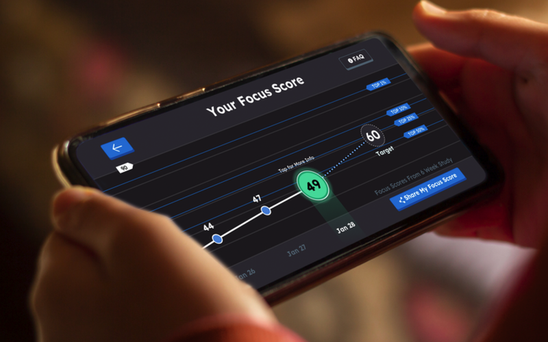
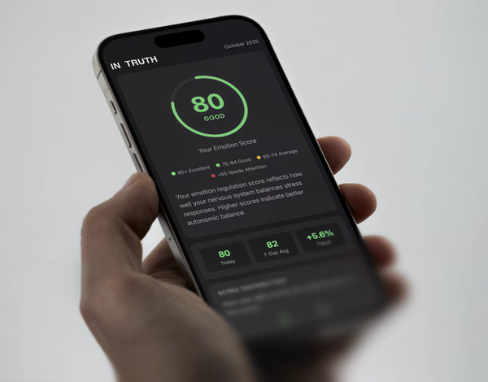

Most digital health companies — especially in cognitive, neurological, and behavioral health — have the ambition but not the team to bridge science, AI, and regulation.
We build products that validate, clear, and scale.
Advisory. Fractional leadership. Hands-on build.
From strategy through production — one team, end-to-end.
| Typical Consultants | Us | |
|---|---|---|
| Track record | Advisory experience | Direct FDA clearance experience (Akili, Pear) |
| Approach | Advise or build, not both | Advisory through production — same team |
| Methods | Black-box ML | Bayesian, interpretable, uncertainty-aware |
| Scope | Narrow engagement types | Advisory, fractional leadership, or full build |
| Domain | Generic health | Deep cognitive/neuro expertise |
| AI for FDA | Generic AI, hope it passes | When the product demands it — AI designed for regulatory acceptance from day one |
Start small. Validate fit. Then build.
A real-time digital biomarker of attentional control, computed from in-game behavior during a video game therapeutic. Read the paper →

A validated composite metric of autonomic regulation derived from PPG wearable data, designed to quantify emotional wellness. Read the paper →

We build AI the FDA will accept — and wellness products backed by real science.
Companies that get this right will define the next era of digital health.
Start with a conversation. We'll discuss your goals, assess fit, and determine whether a Discovery engagement makes sense.
andy@cognitiveinsightconsulting.comWe build the science and AI behind validated digital health.